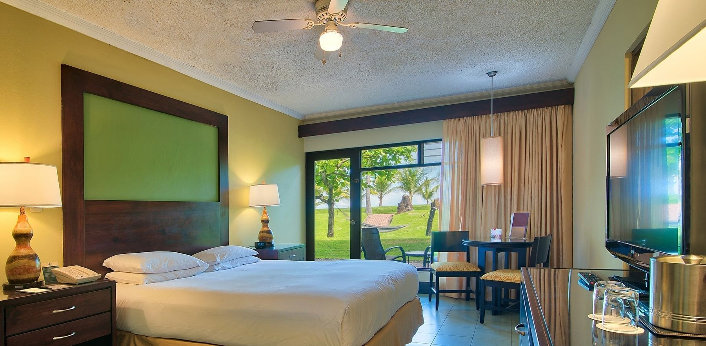

Todos los artículos esenciales y más los puede encontrar en nuestras modernas y elegantes habitaciones, con una selección de comodidades para que se sienta como en casa. A continuación podrá conocer diversas categorías de habitaciones y seleccionar la mas adecuada a sus necesidades:

Habitaciones Fiesta
Fiesta 1 Cama King: Ubicadas alrededor de nuestra piscina para adultos cerca del vestíbulo del complejo, algunas habitaciones tienen vistas al jardín y todos los baños cuentan con duchas de pie y productos de baño amigables con el ambiente.
Fiesta 2 Camas dobles: Ubicadas alrededor de nuestra piscina para adultos cerca del vestíbulo del complejo, algunas habitaciones tienen vistas al jardín y todos los baños cuentan con duchas de pie y productos de baño amigables con el ambiente.
Habitaciones Junior Suite
Junior Suite vista al jardín: Estas suites ofrecen vistas al jardín, un dormitorio principal con una cama King, una sala de estar independiente con cama Queen, un baño con bañera/ducha y productos de baño amigables con el ambiente.
Junior Suite vista a la piscina: Estas suites ofrecen vistas a la piscina, un dormitorio principal con una cama King, una sala de estar independiente con cama Queen, un baño con bañera/ducha y productos de baño amigables con el ambiente.
Junior Suite Familiar: Estas suites, que ofrecen acceso directo a la piscina, cuentan con un dormitorio principal con cama King, una sala independiente con cama Queen, un baño con bañera/ducha.
Junior Suite Nupcial: Estas suites cuentan con vistas a la piscina y al jardín, un dormitorio principal con cama extragrande y un baño con una ducha de pie, un jacuzzi y productos de baño amigables con el ambiente.
Habitaciones Vista al Mar
Vista al Mar 1 Cama King: Estas habitaciones cuentan con vistas al océano Pacífico, un baño con una relajante bañera.
Vista al Mar 2 Camas Dobles: Estas habitaciones cuentan con vistas al océano Pacífico, un baño con una relajante bañera.
Habitaciones Prefernciales
Preferenciales por accesibilidad – una cama King: Estas habitaciones se ubican totalmente accesibles en la planta baja, en una zona tranquila del hotel. Los muebles están colocados de forma que permiten un acceso de 130 cm entre ellos para sillas de ruedas o scooters. Los baños cuentan con ducha, barras de seguridad y productos de baño amigables con el ambiente.
Preferenciales por accesibilidad – dos camas dobles: Estas habitaciones se ubican totalmente accesibles en la planta baja, en una zona tranquila del hotel y con vista al océano. Los muebles están colocados de forma que permiten un acceso de 130 cm entre ellos para sillas de ruedas o scooters. Los baños cuentan con ducha, barras de seguridad y productos de baño amigables con el ambiente.